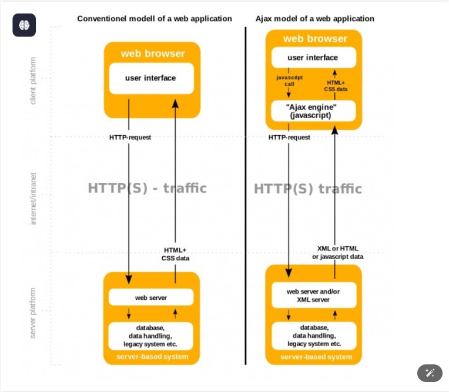
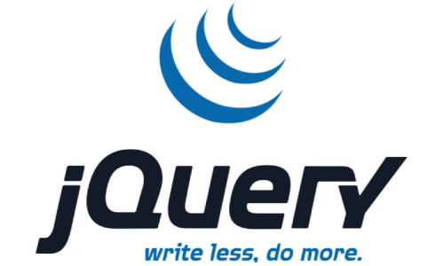
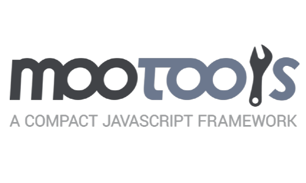

Mecanismos de Seguridad en Formularios
Los mecanismos de seguridad en formularios son esenciales para proteger a los usuarios y sistemas de ataques como inyección SQL, cross-site scripting (XSS), y suplantación de solicitudes (CSRF).
- Validación: Garantiza que los datos ingresados cumplen con los requisitos.
- Sanitización: Elimina caracteres o datos potencialmente dañinos.
- CSRF Tokens: Previenen la ejecución de acciones malintencionadas.
Captchas
El sistema de seguridad para formularios reCaptcha es gratuito en la mayoría de los casos. Requiere registro para la obtención de un par de claves, la de sitio web y la clave secreta. Esto lo podemos hacer fácilmente desde la sección «Admin Console» de la página de reCaptcha
¿Cuándo se usan?
En cualquier sistema que maneje datos sensibles o permita interacción con usuarios mediante formularios.
Introducción a AJAX
AJAX significa JavaScript asíncrono y XML (Asynchronous JavaScript and XML). Es un conjunto de técnicas de desarrollo web que permiten que las aplicaciones web funcionen de forma asíncrona, procesando cualquier solicitud al servidor en segundo plano.
¿Para qué se usa?
Para mejorar la experiencia del usuario, optimizar tiempos de carga y evitar interrupciones.
¿Cuándo se usa?
En aplicaciones web interactivas como chats en tiempo real o buscadores.
Diagrama
JQuery
JQuery simplifica el uso de JavaScript proporcionando una API amigable y potente para trabajar con el DOM, eventos, y animaciones. jQuery facilita la escritura de código JavaScript al proporcionar una sintaxis simplificada y abstraer muchas tareas comunes. JQuery es una librería que contiene otras funcionalidades adicionales, que nos permiten agregarle a las páginas mucha más interacción y efectos.
¿Para qué se usa?
Para acelerar el desarrollo y garantizar compatibilidad entre navegadores.
¿Cuándo se usa?
En proyectos donde se requiere manipulación intensiva de elementos y compatibilidad con navegadores antiguos.
Mootools
El framework MooTools es un conjunto compacto y modular de herramientas para desarrolladores profesionales en JavaScript que se distingue por sus posibilidades de aplicación gracias a un elegante y bien documentado grupo de API y por estar orientado a objetos. MooTools pone a disposición del desarrollador varias funciones y clases para facilitar la programación y el diseño de proyectos web modernos y simplificar en gran medida el proceso de trabajo. Además, su diseño modular lo hace escalable.
¿Para qué se usa?
Para implementar componentes avanzados y efectos visuales en proyectos web.
¿Cuándo se usa?
En sitios que necesitan animaciones avanzadas y control detallado del comportamiento de elementos.
Prototype
Prototype extiende JavaScript para facilitar tareas como el manejo de datos dinámicos y la interacción con el servidor. JavaScript es a menudo descrito como un lenguaje basado en prototipos - para proporcionar mecanismos de herencia, los objetos pueden tener un objeto prototipo, el cual actúa como un objeto plantilla que hereda métodos y propiedades. Un objeto prototipo del objeto puede tener a su vez otro objeto prototipo, el cual hereda métodos y propiedades, y así sucesivamente. Esto es conocido con frecuencia como la cadena de prototipos, y explica por qué objetos diferentes pueden tener disponibles propiedades y métodos definidos en otros objetos.

¿Para qué se usa?
Para acelerar el desarrollo y gestionar datos de manera eficiente.
¿Cuándo se usa?
En aplicaciones que necesitan interacción compleja entre cliente y servidor.